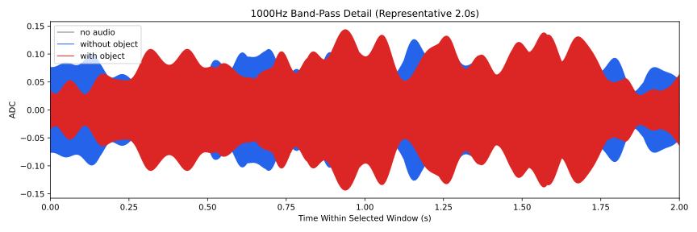
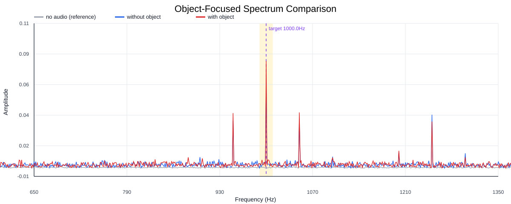
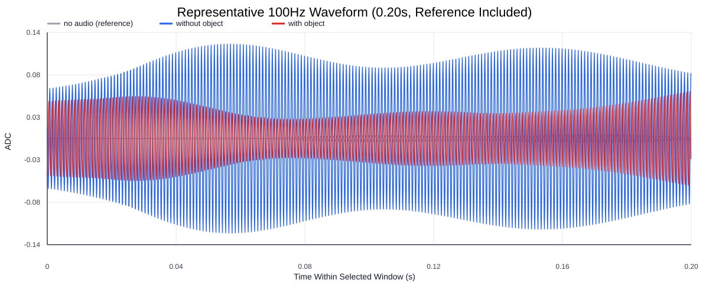
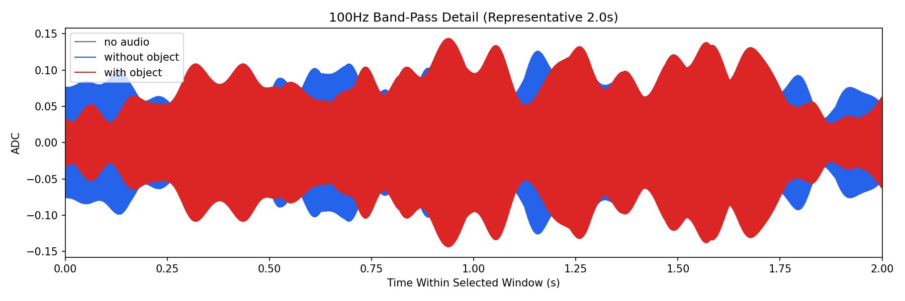
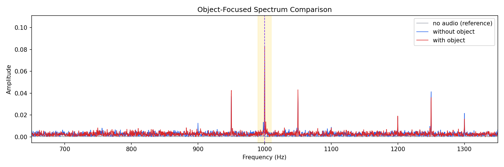
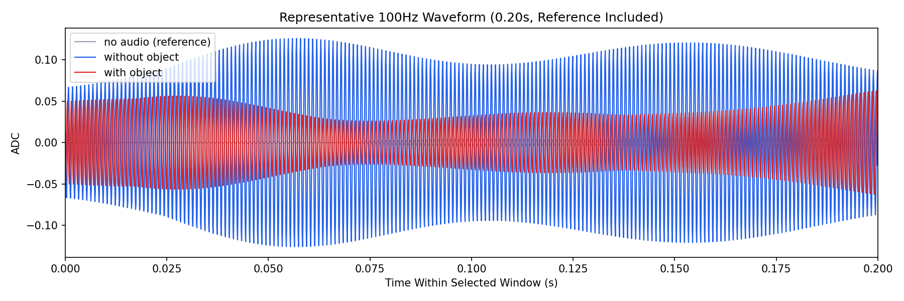

Background: F:\项目类文件夹\异物检测4.10\Data_Dual\frequency_sweep\1000Hz\repeat_04\raw\no_audio.csv
Without object: F:\项目类文件夹\异物检测4.10\Data_Dual\frequency_sweep\1000Hz\repeat_04\raw\without_object.csv
With object: F:\项目类文件夹\异物检测4.10\Data_Dual\frequency_sweep\1000Hz\repeat_04\raw\with_object.csv
| Metric | 无音频 | 100Hz无异物 | 100Hz有异物 | 无异物/无音频 | 有异物/无异物 | 有异物/无音频 |
|---|---|---|---|---|---|---|
| centered_rms | 0.058187 | 0.273423 | 0.288347 | 4.6991 | 1.0546 | 4.9556 |
| raw_target_amp | 0.000857 | 0.069633 | 0.082882 | 81.2306 | 1.1903 | 96.6859 |
| filtered_rms | 0.004139 | 0.056727 | 0.069166 | 13.7062 | 1.2193 | 16.7118 |
| filtered_target_amp | 0.000857 | 0.069633 | 0.082882 | 81.2306 | 1.1903 | 96.6859 |
| filtered_energy_ratio | 0.005059 | 0.043044 | 0.057539 | 8.5077 | 1.3368 | 11.3727 |
| window_filtered_target_amp_mean | 0.004599 | 0.075811 | 0.088306 | 16.4846 | 1.1648 | 19.2015 |
| window_filtered_target_amp_std | 0.003334 | 0.025661 | 0.041794 | 7.6963 | 1.6287 | 12.5351 |





